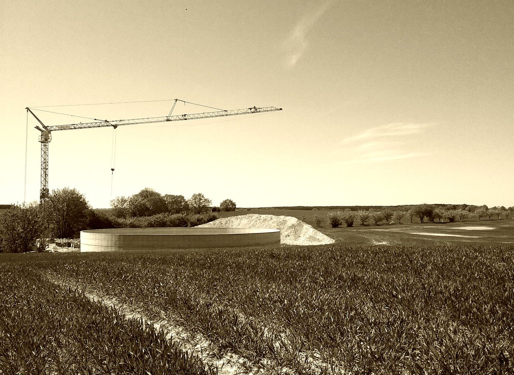

Kreis

Tourismusentwicklungsgebiet Lassaner Winkel ade?
Es gab Prioritätenlisten der alten Kreise OVP, Ueckermünde und im aufgespaltenen Landkreis Demmin für Kreisstrassen. Nach der Fusion zum Kreis Vorpommern/Greifswald fielen diese Planungen weg und es wurde eine neue Prioritätenliste aufgestellt. Im Dunkel der Verwaltung entstand aber noch eine sogenannte „0 Liste“, die jetzt ohne Durchlauf der Kreistagsgremien und deren Legitimation im Falle K 31 von der Verwaltung durchgedrückt werden soll. Auch die demokratischen Instrumente und die Planungshoheit der Gemeinden wurden umgangen. Die Verantwortung dafür tragen in erster Linie der stellvertretende Landrat und Vorsitzende des Bauamtes Herr Hasselmann und der Vorsitzende des Verkehrs- und Tourismusausschusses Herr Karl Heinz Schröder, beide CDU. Im Lassaner Winkel hat Herr Hasselmann die Verwaltung instrumentalisiert, um eine Baugenehmigung für ein Güllelager zu erteilen, welches mit 3 m³ die Anforderungen für ein Standortsucheverfahren, welches in diesem Falle geboten war, unterläuft. Im Antragsverfahren konnte das Straßenverkehrsamt eine ausreichend gesicherte Erschließung für dieses Güllegroßlager nicht bestätigten. (siehe Beschlussgrundlage für den Kreistag) Deshalb wurde mit Hilfe der sogenannten „0 Liste“ zwischen Herrn Hasselmann und dem Bürgermeister der Stadt Lassan im geheimen Verhandlungen über eine Ertüchtigung der K 31 mit Mitteln aus dem Ländlichen Wegebau geführt. In der Stadtvertretersitzung vom 05.09.2017 redete Herr Hasselmann um den heißen Brei herum und sagte sinngemäß, dass er in dem letzten Gespräch, die er mit den Ausschüssen hat, prioritär die Kreisstraße nach oben setzen und sie in absehbarer Zeit dann auch erneuert wird. So ist es auch in der Niederschrift der Stadtvertretersitzung vom 05.09.2017 festgehalten. Nach Einschätzung des stellvertretenden SPD - Fraktionsvorsitzenden im Kreistag Dr. Jikeli ist das falsch. Er führte in der Sondersitzung des Verkehr- u. Tourismusausschusses vom 10.04.18 aus, dass vor dem 20.11.2017 (Unterlagen für die Kreistagssitzung vom 04.12.2017) die K 31 nie Thema in den Ausschüssen war. Die Auskunft von Dr. Jikeli wurde durch den Vorsitzenden, Herr Karl Heinz Schröder ergänzte, der sagte, dass das auch nicht notwendig gewesen sei. Damit verfehlt der Vorsitzende allerdings die Wahrnehmung seiner politischen Verantwortung, da er auch für die touristischen Belange eine politische Verantwortung trägt und die K 31 nach RREG VG im Tourismusentwicklungsgebiet liegt. Die Aussage von Herrn Hasselmann, dass er zu einer Radwegevariante nichts sagen kann, ist untragbar. Alle Fragen und Erfordernisse müssen auch aus Perspektiven des Regionalen Raumordnungsprogramms MV im Ausschuss betrachtet werden. Dass das nicht erfolgte, ist Ausdruck einer interessenorientierten Verweigerungshaltung, die beiden CDUPolitikern vorzuwerfen ist. Angeblich, so die Ansagen des Stellvertretenden Landrates weiter, wurden zwischen den Stadtvertretern Lassans und dem Kreis die Sanierungsvorhaben und die Verkehrssicherheit abgestimmt. Also das kann nur im Einzelfall zutreffen, denn nicht alle Stadtvertreter oder die Öffentlichkeit haben bisher davon Kenntnis. Es ist ja bekannt, dass sich einige Stadtvertreter wegen des Schulweges in die Nachbarorte Gedanken machten. Diese hätten sich bestimmt an diesen Gesprächen beteiligen wollen.Matthias Andiel Vorsitzender der Bürgerinitiative „Kein Güllegroßlager im Lassaner Winkel“ https://www.facebook.com/KeinGuellelagerbeiLassan/
Tollensetaler Stimme 2018/05, S. 13Die Ferkelfabrik hat Wasserprobleme
Erst kam nicht genügend Wasser rein, nun darf kein Wasser einfach so raus. Nach unseren Recherchen bekamen die Tiere eine ganze Zeit lang entweder zu wenig Tränkwasser oder nicht zu dieser Verwendung frei gegebenes Spül- bzw. Beprobungswasser aus den wieder eingerichteten Brunnen von Plötz. Nun aber heißt es: Wohin mit dem Abwasser? Von Beginn an vertraten wir die Meinung, dass der von den Dachund Verkehrsflächen abfließende Regen wie Abwasser zu behandeln ist. Herr Straathof und die Ämter wollten das besser wissen und das Einleiten in Gräben – Bäke – Tollense gestatten. Nun hat inzwischen die praktische Erfahrung in Medow gezeigt: Es ist Abwasser. Wir gehören ja inzwischen zum gleichen Kreis Vorpommern-Greifswald. Dessen Untere Wasserbehörde hat dem Antrag auf Einleitung in die Vorflut nicht stattgegeben. Herr Straathof dagegen hatte schon illegale Rohrleitungen zum Graben verlegen und das Regenwasserrückhaltebecken ohne Kenntnis der Behörden im Vergleich zur Baugenehmigung einfach nur halb so groß errichten lassen. Wer ohne letzte Zustimmungen baut, muss mit Risiken leben. Dem Ausschuss für Gemeindeentwicklung wurde am 6. November ein neues Konzept mit weiteren Becken zur Empfehlung an die Gemeindevertretung vorgestellt. Erstmalig waren sich alle Mitglieder einig: So geht es nicht! – Fachliche Begründung mangelhaft. Meine Berechnung der versiegelten Fläche ergab unter Berücksichtigung inzwischen häufig auftretender Starkregenereignisse, dass selbst die vergrößerten Becken überlaufen können. Ich forderte die zuständigen Behörden auf, den Berechnungen zu folgen oder sie zu widerlegen. Mit Blick auf die nächste Zusammenkunft der Gemeindevertreter bat ich um Antwort bis zum 12. Dezember 2012. – Keine Antwort! Aber die von mir vorgelegte Begründung hatte wohl doch ausgereicht, die Projektanten neu arbeiten zu lassen. Am 12. Dezember hat Herr Straathof ein überarbeitetes Konzept eingereicht. Es soll in der GV-Sitzung am 20. Dezember vorgelegt werden. Der Investor bittet um Zustimmung. Da aus meiner Sicht immer wieder auf veraltete „statistisch erfasste“ Niederschlagsmengen zurückgegriffen wird, fehlt in der Berechnung die Berücksichtigung zunehmender Starkregenereignisse. Ich zitiere aus der Erörterung zur vorgelegten Projektplanung: Gemäß der Planungsunterlage zur Dimensionierung der Abwasseranlagen beträgt die maximale Niederschlagsmenge eines 10-jährigen Ereignisses 63,8 mm, bzw. 6.350 m³. P. S.: In MV gab es in diesem Sommer Starkregen mit mehr als 140 mm Niederschlag innerhalb von 12 Stunden. Da will und kann kein Landwirt Wasser auf seine Felder ausbringen. Korn soll zur Ernte trocknen, die Felder sind nach solchem Regen nicht befahrbar.Günter Hegewald Gemeindevertreter
Tollensetaler Stimme 2012/12, S. 8